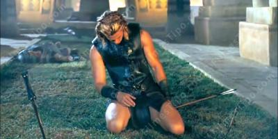

curiosidades sobre o fllme(2004)
Brad Pitt e Eric Bana não usaram dublês em sua luta icônica Os atores Brad Pitt e Eric Bana, que interpretaram os papéis de Aquiles e Heitor se enfrentam em uma luta épica. que foi narrado por Homero na Antiguidade e trazido para a tela por Wolfgang Petersen em 2004. No entanto, para esta cena os atores optaram por lutar contra si mesmos. Como código de honra, eles concordaram em pagar US$ XNUMX um ao outro em caso de uma batida acidental. Finalmente, Eric Bana não teve que pagar nada a Brad Pitt. No entanto, “Sr. Smith” teve que pagar uma quantia de oitocentos dólares ao seu parceiro.
Foi filmado em Cabo San Lucas

As cenas de batalha foram gravadas no deserto de Cabo San Lucas. Ora, o curioso deste local é que, no referido terreno, cresce um tipo de cacto único na zona. Por isso, os produtores do filme tiveram que contratar especialistas para transferir as plantas para outros locais temporariamente. Após as filmagens, eles foram devolvidos ao seu local.
Apenas 1.500 extras foram usados em cenas de batalha
Embora pareça haver exércitos de dezenas de milhares de soldados, para as filmagens foram necessários apenas 1.500 extras. Deles, 250 eram fisiculturistas e, o resto, foram feitos por computador.

Brad Pitt lesionou o tendão de Aquiles
Por último, mas não menos importante, ou curiosamente, as gravações pararam por algum tempo, pois Brad Pitt lesionou o tendão que leva o nome de seu personagem. As rotinas de exercícios de Brad Pitt no palco e fora do palco foram um tópico de conversa por si só ao lado do filme.
